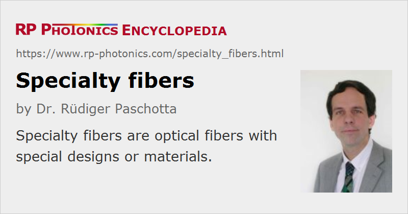

Specialty Fibers
Definition: optical fibers with special designs or materials
More general term: optical fibers
More specific terms: fluoride fibers, phosphate fibers, active fibers, polarization-maintaining fibers, tapered fibers, photonic crystal fibers
German: Spezialfasern
Category: fiber optics and waveguides
How to cite the article; suggest additional literature
Author: Dr. Rüdiger Paschotta
Specialty optical fibers are usually understood as optical fibers which have at least one special property, distinguishing them from standard fibers. However, there is no universally accepted definition of the term standard fiber. One may regard a standard fiber as a simple step-index fiber, made with a standard material (in case of glass fibers: silica) and with common values of parameters like the core size and numerical aperture. Specialty fibers can then belong to various groups:
- Some fibers use non-standard materials. For example, there are fluoride fibers which can transmit in longer (infrared) wavelength regions (→ mid-infrared fibers). Also, there are phosphate glass fibers, which can be more highly doped with laser-active rare earth ions. Radiation-resistant fibers are made from materials which are less affected by radiation, and used for example in space applications. Some fibers are made from monocrystalline material; they are called single-crystal fibers. There are even liquid core fibers, offering wideband infrared transmission. Special materials may also be used for fiber coatings and jackets.
- Active fibers, being doped with laser-active ions (generally with rare earth ions), are often generally regarded as specialty fibers. Double-clad fibers, having an additional larger waveguide structure for pump light, are even more special.
- Some fibers exhibit extreme or specially tailored parameters, such as an unusually large fiber core diameter or a very high numerical aperture. Also, there are large mode area fibers, exhibiting particularly large fiber modes. Dispersion-shifted fibers have tailored chromatic dispersion properties. In dispersion-decreasing fibers, the chromatic dispersion even varies over the length.
- There are fibers where the waveguide function is not obtained simply with a somewhat increased refractive index in the core (→ step-index fibers), but in some other way. For example, there are photonic crystal fibers, containing air holes and therefore also being called holey fibers.
- Polarization-maintaining fibers of different designs can be used to maintain a linear polarization state over arbitrarily long propagation distances. Single-polarization fibers guide only light with a certain polarization direction.
- Tapered fibers have been stretched to obtain a reduced fiber diameter, which usually changes along the length. They can be used, for example, for mode field adapters.
As there can be so different special properties, it is preferable to use a more specific term than specialty fibers, particularly in scientific publications.
Suppliers
The RP Photonics Buyer's Guide contains 53 suppliers for specialty fibers. Among them:
Questions and Comments from Users
Here you can submit questions and comments. As far as they get accepted by the author, they will appear above this paragraph together with the author’s answer. The author will decide on acceptance based on certain criteria. Essentially, the issue must be of sufficiently broad interest.
Please do not enter personal data here; we would otherwise delete it soon. (See also our privacy declaration.) If you wish to receive personal feedback or consultancy from the author, please contact him e.g. via e-mail.
By submitting the information, you give your consent to the potential publication of your inputs on our website according to our rules. (If you later retract your consent, we will delete those inputs.) As your inputs are first reviewed by the author, they may be published with some delay.
See also: fibers, fiber optics, rare-earth-doped fibers, double-clad fibers, photonic crystal fibers, mid-infrared fibers, single-crystal fibers, polarization-maintaining fibers, single-polarization fibers, few-mode fibers, multi-core fibers
and other articles in the category fiber optics and waveguides
|  |
If you like this page, please share the link with your friends and colleagues, e.g. via social media:
These sharing buttons are implemented in a privacy-friendly way!